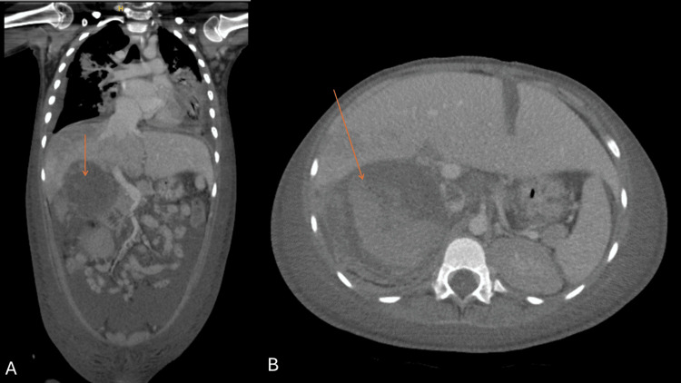
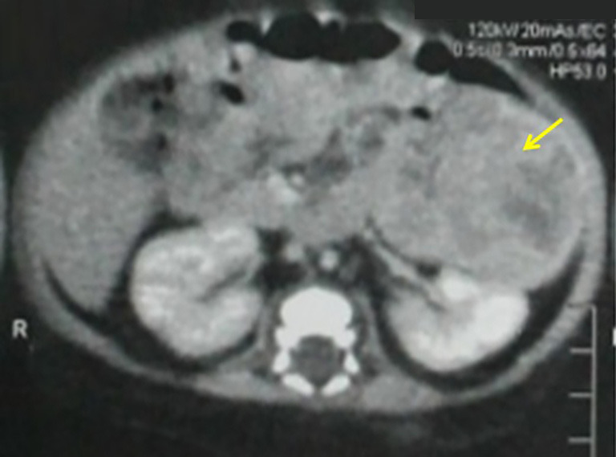
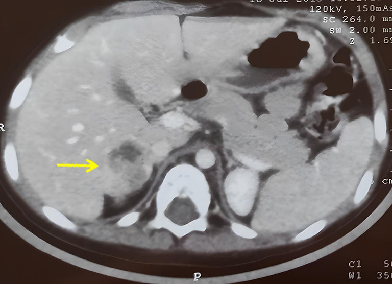

193 — Ung thư vỏ thượng thận (ACC) ở trẻ: nam hóa – Cushing, phân biệt với tăng sản thượng thận bẩm sinh, CT/MRI, phân giai đoạn COG & mitotane / Pediatric adrenocortical carcinoma
Tags: pattern:khoi-thuong-than pattern:hoai-tu pattern:nam-hoa vung:thuong-than vung:o-bung-nhi score:COG-stage-ACC score:Wieneke protocol:CT-bung-co-can-quang incidentaloma:u-thuong-than
Mức chắc chắn (certainty): tổng hợp y văn (literature synthesis) — 2 loạt ca nguyên văn có ảnh (PMC12807624, PMC12885833), dữ liệu hình ảnh từ 2 nghiên cứu so sánh ACC – u tuyến ở trẻ (Flynt 2015; Hu 2026), và khảo sát hội đồng u nhiều trung tâm ENSAT-PACT (PMC11940591).
Câu chốt: Trẻ nam hóa sớm hoặc Cushing + khối thượng thận lớn, không đồng nhất thì chẩn đoán phải nghĩ tới ung thư vỏ thượng thận (ACC) — kể cả khi 17-OHP tăng và bệnh nhi đã được chẩn đoán "tăng sản thượng thận bẩm sinh". Kích thước không loại trừ: u 3,2 cm vẫn là ACC (ca PMC12885833), và u nhỏ không được phép trấn an. Điều quyết định sống còn là cắt trọn u lần đầu (R0) + phân giai đoạn COG đúng, không phải hóa trị.
1. Tổng quan bệnh học – cơ chế hình ảnh
- Dịch tễ (số liệu): ACC trẻ chiếm < 0,2% ung thư nhi, 0,2–0,3 ca/1 triệu trẻ/năm; ở nam Brazil cao gấp 10–15 lần do đột biến mầm TP53 p.R337H. Phân bố hai đỉnh: < 5 tuổi** và **> 10 tuổi; nữ nhiều hơn nam (PMC12885833).
- Di truyền: TP53 (hội chứng Li–Fraumeni) là nền tảng hay gặp nhất, ngoài ra Beckwith–Wiedemann, MEN1. Vì vậy tư vấn di truyền được 100% hội đồng u đồng thuận (PMC11940591).
- Vì sao gần như luôn có triệu chứng nội tiết: vỏ thượng thận là cơ quan tổng hợp steroid; u tăng sinh tế bào vỏ vẫn giữ enzym steroidogenesis → 90%+ u có chức năng (khác người lớn, nơi nhiều u "câm"). Ba kiểu: nam hóa đơn thuần (tiên lượng tốt hơn), Cushing, hỗn hợp.
- Vì sao CT không đồng nhất: u lớn nhanh vượt cấp máu → hoại tử trung tâm (dịch/hoại tử: giảm tỷ trọng, không ngấm), xuất huyết trong u, và vôi hóa loạn dưỡng. Trên CT, ACC có vách xơ ngoại vi kèm tiểu động mạch nuôi nhỏ → kiểu ngấm "nan hoa xe" (spoke-wheel) — dấu hiệu độc lập dự báo ACC với OR 15,62 (Hu 2026).
- Vì sao DWI giúp: tế bào u dày đặc → ADC thấp; nghiên cứu 32 trẻ cho thấy ADC tối thiểu khác biệt có ý nghĩa giữa ACC và không-ACC (Hu 2026). Nhưng ADC không thay thế mô bệnh học.
- Ngưỡng kích thước (nghiên cứu so sánh 9 u tuyến vs 15 ACC):
| Chỉ số | ACC | U tuyến (adenoma) | Ý nghĩa |
|---|---|---|---|
| Đường kính ngang lớn nhất (trung bình) | 9,9 cm (3,0–14,9) | 4,4 cm (1,9–8,2) | AUC 0,92 |
| Thể tích (trung bình) | 581 mL (16–2.101) | 54 mL (3–197) | AUC 0,92, p = 0,003 |
| Không đồng nhất sau tiêm | 13/14 | 2/9 | OR 45,5, p = 0,001 |
| Vôi hóa trên CT | 6/13 | 1/8 | OR 6,0 nhưng p = 0,17 (chưa đủ mạnh) |
| Di căn lúc chẩn đoán | 7/15 | 0 | Giai đoạn IV |
| Xâm lấn tĩnh mạch chủ dưới | 3/15 | 0 | Nguy cơ huyết khối u |
(Flynt KA et al., Pediatr Radiol 2015, PMID 25794486 — số liệu từ phần tóm tắt/toàn văn, không dùng ảnh.)
- Vì sao "chẩn đoán nhầm CAH" là bẫy chết người: cả ACC và tăng sản thượng thận bẩm sinh đều tăng 17-OHP, testosteron, DHEA với ACTH bị ức chế. Ca PMC12807624: 17-OHP 10,77 ng/mL (trẻ 3–6 tuổi < 2,77), testosteron 30,17 nmol/L (trước dậy thì < 0,5), DHEA 77,94 µg/dL (< 40), ACTH 1,05 pmol/L (1,6–13,9) — bệnh nhi đã được điều trị hydrocortison 5 tháng vì "CAH thể muộn" trong khi khối u đã có huyết khối tới nhĩ phải.
- Tiên lượng (số liệu): giai đoạn khu trú I–II sống 5 năm > 80%, giai đoạn di căn < 20% (EXPeRT); EFS 5 năm theo giai đoạn: I 86,2% – II 53,3% – III 81% – IV 7,1% (Rodriguez-Galindo); trẻ < 4 tuổi OS khoảng 80%; ACC di căn có trung vị sống 27 tháng (Flynt 2015).
2. Mẫu hình + chẩn đoán phân biệt theo lứa tuổi & kiểu nội tiết (gamut)
- A — Sơ sinh/nhũ nhi + Cushing đơn thuần (béo mặt tròn, rậm lông, tăng cân): ACC thể Cushing (ca 2 tháng tuổi, u 60 × 55 × 45 mm); phân biệt tăng sản thượng thận bẩm sinh thể không điển hình, u tuyến vỏ thượng thận, Cushing do thuốc, hội chứng McCune–Albright.
- B — Trẻ 2–6 tuổi + nam hóa (dương vật to, lông mu, tuổi xương tăng): ACC tiết androgen (ca 3 tuổi: tuổi xương 7 tuổi so với 3 tuổi thật); phân biệt CAH thể không điển hình, u tuyến, u tế bào Leydig (tinh hoàn), u trung thất/tuyến thượng thận lạc chỗ.
- C — Trẻ + nam hóa/Cushing + tăng huyết áp: ACC hỗn hợp (ca 2,5 tuổi: HA 130/100 mmHg, co giật do cơn THA); phân biệt pheochromocytoma (metanephrine tăng, không tăng 17-OHP), cường aldosterone (rất hiếm ở trẻ).
- D — Khối bụng tình cờ, không triệu chứng nội tiết: hiếm ở trẻ nhưng vẫn có; phân biệt neuroblastoma (vôi hóa lấm tấm, bao bọc mạch, catecholamine), Wilms (xuất phát từ thận, dấu móng vuốt), u mô bào/teratoma.
- E — Khối thượng thận + huyết khối tĩnh mạch chủ dưới/nhĩ phải: ACC xâm lấn mạch (ca PMC12807624: huyết khối từ tĩnh mạch gan → IVC → nhĩ phải, khối trong nhĩ 5,32 × 3,49 cm, chênh áp qua van ba lá trung bình 7 mmHg, tối đa 15 mmHg).
- Gợi nhớ: "2 tuổi – 2 bên – 2 hội chứng" (không dùng cho ACC đơn thuần) → dùng mnemonic đúng cho ACC trẻ: "V–C–S" — Virilization (hay gặp nhất), Cushing, Size lớn.
3. Bảng so sánh phân biệt (ma trận đối chiếu)
| Thực thể (entity) | Hình ảnh điển hình | Chốt vào (rule-in) | Chốt loại (rule-out) | Gợi ý xác nhận |
|---|---|---|---|---|
| ACC (vỏ thượng thận) | Khối > 5 cm, không đồng nhất, hoại tử trung tâm, vôi hóa, vách xơ + tiểu động mạch nuôi → ngấm nan hoa, ± huyết khối IVC/nhĩ | Khối lớn + không đồng nhất + nam hóa/Cushing + DHEA-S/testosteron rất cao, ACTH thấp | ≤ 10 HU không tiêm (mỡ nội bào) hoặc đồng nhất nhỏ < 4 cm → nghĩ u tuyến | CT 3 thì + MRI bụng; mô bệnh Wieneke; TP53 |
| U tuyến vỏ thượng thận | Nhỏ (trung bình 4,4 cm), đồng nhất, ngấm đều, không hoại tử | Đồng nhất + < 4–5 cm + không xâm lấn | Hoại tử/vôi hóa/không đồng nhất + > 6 cm → ACC | Theo dõi hoặc cắt; Wieneke |
| Tăng sản thượng thận bẩm sinh (CAH) | Hai thượng thận to đối xứng, giữ hình, không có khối thống trị | Hai bên to lan tỏa + 17-OHP tăng + ACTH tăng (thể kinh điển) | Một bên có khối thống trị, bờ không đều, hoại tử → u | 17-OHP, điện giải, gen CYP21A2 |
| Pheochromocytoma | Khối ngấm mạnh thì động mạch > 110–120 HU, có thể hoại tử, thải thuốc giả adenoma | Metanephrine tăng + cơn THA/đánh trống ngực | 17-OHP/testosteron tăng, metanephrine bình thường → ACC | Metanephrine trước mọi can thiệp (bài 155, 168) |
| Neuroblastoma | Khối vôi hóa lấm tấm 85%, bao bọc mạch, vượt đường giữa, thường < 5 tuổi | Vôi hóa lấm tấm + bao bọc mạch + catecholamine/HVA-VMA tăng | Vôi hóa thô/loạn dưỡng + nam hóa + DHEA-S tăng → ACC | MIBG, sinh thiết tủy xương (bài 630) |
| Wilms (u nguyên bào thận) | Xuất phát từ thận, dấu móng vuốt, đẩy lệch mạch, huyết khối TM thận | Móng vuốt + khối trong thận + tiểu máu | Thượng thận tách khỏi thận, đẩy thận xuống → ACC | Siêu âm/CT, mô bệnh (bài 639) |
4. Protocol chụp + phân giai đoạn + điều trị
4.1. Chẩn đoán hình ảnh (thứ tự thực hành):
- Siêu âm bụng là bước đầu (phát hiện khối, vôi hóa, huyết khối tĩnh mạch); CT bụng–tiểu khung có cản quang là chuẩn để đánh giá kích thước, hoại tử, vôi hóa, xâm lấn và huyết khối IVC.
- MRI bụng khi cần đánh giá huyết khối u trong IVC/nhĩ phải hoặc xâm lấn cơ quan lân cận; siêu âm tim khi nghi huyết khối tới nhĩ (ca PMC12807624 phát hiện khối nhĩ trước khi chụp CT).
- CT ngực tìm di căn phổi (7/15 ca có di căn lúc chẩn đoán); xạ hình xương khi có đau/ALP cao.
- PET-CT: 100% hội đồng u ENSAT-PACT khuyến cáo cho phân giai đoạn (PMC11940591) — nhưng đây là ý kiến chuyên gia, không phải bằng chứng mức cao.
- KHÔNG sinh thiết trước mổ thường quy: nguy cơ vỡ u, gieo rắc; chỉ 1/7 trung tâm đề nghị sinh thiết trước cắt (PMC11940591).
4.2. Phân giai đoạn COG 2012 (dùng cho trẻ, khác ENSAT người lớn):
| Giai đoạn | Định nghĩa |
|---|---|
| I | Cắt trọn hoàn toàn, u ≤ 5 cm hoặc ≤ 200 g, không vỡ bao, không di căn hạch |
| II | Cắt trọn hoàn toàn nhưng u > 5 cm hoặc > 200 g |
| III | Cắt không trọn, vỡ bao, xâm lấn tại chỗ, hoặc di căn hạch |
| IV | Di căn xa (gan, phổi, xương) |
4.3. Mô bệnh học: dùng Wieneke score cho trẻ — Weiss criteria đánh giá quá mức ác tính ở trẻ và làm sai lệch phân loại (PMC12885833). Ba ca nguồn đều Wieneke 3 ("tiềm năng ác tính trung gian"), cắt R0, không cần hóa trị bổ trợ, không tái phát sau 3–4 năm.
4.4. Điều trị (theo đồng thuận hiện hành):
- Cắt trọn u (R0) là trụ cột — mổ mở là chuẩn; nội soi chỉ chọn lọc khi u < 6 cm, bao nguyên vẹn, không xâm lấn, phẫu thuật viên nhi giàu kinh nghiệm. Nạo hạch vùng được khuyến cáo khi làm được (100% hội đồng u).
- Mitotane (thuốc hủy vỏ thượng thận) cho giai đoạn III hoặc cắt không trọn (R1–RX); ADIUVO cho thấy không lợi ích ở nhóm cắt trọn + Ki-67 thấp. Hội đồng u ENSAT-PACT: duy trì mitotane 3–5 năm ở ca nguy cơ cao; nồng độ đích quan trọng hơn liều tuyệt đối — ngưỡng số riêng cho trẻ chưa rõ trong nguồn đã đọc, cần tra.
- Hóa trị: EDP (etoposide + doxorubicin + cisplatin) ± mitotane cho giai đoạn III–IV.
- Xạ trị: tránh ở trẻ vì nhiều bệnh nhi mang TP53 mầm → tăng ung thư thứ hai trong trường xạ; chỉ dùng khi không còn lựa chọn (4/7 trung tâm vẫn xem xét xạ trong bối cảnh riêng).
- Sau mổ: theo dõi nội tiết (lâm sàng dậy thì, HA, đường huyết) + hình ảnh định kỳ; tầm soát Li–Fraumeni cho bệnh nhi và gia đình (bài
198).
flowchart TD
A[Trẻ nam hóa / Cushing / khối thượng thận] --> B[17-OHP, testosteron, DHEA-S, ACTH, cortisol, metanephrine]
B -->|Metanephrine tăng| C[Pheochromocytoma - bài 168/177]
B -->|17-OHP + DHEA-S tăng, ACTH thấp| D[Siêu âm + CT bụng có cản quang]
D --> E{Khối > 5 cm, không đồng nhất, hoại tử, vôi hóa?}
E -->|Không| F[Theo dõi / cắt chẩn đoán, Wieneke]
E -->|Có| G[Nghi ACC - MRI bụng + CT ngực + PET-CT]
G --> H{Có huyết khối IVC hoặc nhĩ phải?}
H -->|Có| I[Siêu âm tim + hội chẩn tim mạch - phẫu thuật]
H -->|Không| J[Mổ mở cắt trọn + nạo hạch vùng]
I --> J
J --> K[Wieneke + COG staging]
K -->|Giai đoạn I-II, R0| L[Theo dõi, không hóa trị bổ trợ]
K -->|Giai đoạn III hoặc R1-RX| M[EDP + mitotane, duy trì 3-5 năm]
K -->|Giai đoạn IV| N[Hóa trị + mitotane, cân nhắc thử nghiệm]
L --> O[Tư vấn TP53 / Li-Fraumeni - bài 198]
M --> O
N --> O
5. Biến thể bình thường và cạm bẫy
- Bẫy CAH: bệnh nhi "đáp ứng kém với hydrocortison", nam hóa tiến triển nhanh, khối thượng thận bất đối xứng/to ra — ba dấu hiệu này phải phá vỡ chẩn đoán CAH và chỉ định chụp.
- Bẫy kích thước: u 3,2 cm vẫn là ACC (ca PMC12885833) — ngưỡng "> 4 cm mới lo" của người lớn không dùng để trấn an ở trẻ.
- Bẫy Wieneke/Weiss: áp Weiss cho trẻ sẽ gọi quá mức ác tính → điều trị bổ trợ không cần thiết; dùng Wieneke.
- Bẫy "đã có chẩn đoán mô bệnh là lành": u "tiềm năng ác tính trung gian" (Wieneke 3) vẫn cần theo dõi dài hạn, không phải "mổ xong là hết".
- Bẫy huyết khối u: huyết khối trong IVC/nhĩ phải có thể bị đọc là huyết khối thông thường trên siêu âm (ca PMC12807624: IVC bị "xóa" do hiệu ứng khối) — phải có siêu âm tim trước khi gây mê.
- Bẫy gây mê: khối nhĩ gây hẹp van ba lá (chênh áp 7 mmHg) → tụt huyết áp khi khởi mê; hội chẩn tim mạch – gây mê trước.
- Bẫy sau mổ: cắt u mất nguồn cortisol → suy thượng thận cấp; cần hydrocortison chu phẫu và giảm liều từ từ.
- Bẫy xạ trị: ở trẻ mang TP53, xạ trị làm tăng ung thư thứ hai — chỉ định phải do hội đồng u quyết.
6. Tự lượng giá — Blind Quiz
Ca 1 — Bé trai 3 tuổi, nam hóa tiến triển 7 tháng, bụng chướng, gan to. Xem CT bụng có cản quang.

- Gợi ý: khối rất lớn, có vùng giảm tỷ trọng không ngấm và vôi hóa/bọt khí trong u.
- Câu hỏi: (1) Mô tả 3 đặc điểm hình ảnh gợi ác tính. (2) Cần thêm 2 thăm khám nào trước khi gây mê? (3) Vì sao bệnh nhi này từng được chẩn đoán "CAH thể muộn"?
Bấm để hiện đáp án (findings + chẩn đoán)
- Dấu hiệu: khối thượng thận phải 7,8 × 7,3 × 10,2 cm, ngấm không đồng nhất với vùng hoại tử không ngấm, vôi hóa, dây mỡ (fat stranding) quanh u (gợi ý vỡ u), dịch tự do trong bụng (hemoperitoneum), khuyết đầy 1,5 × 1,1 × 2,2 cm trong IVC (huyết khối) và giảm tưới máu gan phải.
- Cần làm trước gây mê: siêu âm tim (khối đã lan tới nhĩ phải 5,32 × 3,49 cm, chênh áp qua van ba lá 7 mmHg) và đánh giá chức năng gan–thận–đông máu (AST > 4.001 U/L, ALT 6.118 U/L, INR 4,52 trong ca này).
- Vì sao nhầm CAH: 17-OHP 10,77 ng/mL, testosteron 30,17 nmol/L, DHEA 77,94 µg/dL, ACTH 1,05 pmol/L — hồ sơ steroid chồng lấp hoàn toàn với CAH thể không điển hình; khối thượng thận không được chụp trong 5 tháng điều trị hydrocortison.
- Chẩn đoán: ACC giai đoạn IV, TP53 mầm (Li–Fraumeni), huyết khối u tới nhĩ phải; diễn tiến tử vong sau mổ giải áp.
- Nguồn ảnh: AlShoaibi M et al., Cureus 2026 (PMC12807624), Fig. 6, CC BY 4.0.
Ca 2 — Bé gái 2 tháng tuổi, mặt tròn, rậm lông, khối bụng trái. Xem CT bụng.

- Câu hỏi: (1) Kích thước và đặc điểm ngấm thuốc? (2) Xét nghiệm nội tiết nào chốt "Cushing phụ thuộc thượng thận"? (3) Sau cắt trọn, có cần hóa trị không — vì sao?
Bấm để hiện đáp án (findings + chẩn đoán)
- Dấu hiệu: khối thượng thận trái 60 × 55 × 45 mm, tăng mạch không đồng nhất, hoại tử trung tâm (mũi tên vàng), vượt đường giữa nhưng không xâm lấn và không di căn.
- Nội tiết: cortisol đêm 162,1 ng/mL, ACTH 4,6 pg/mL (bị ức chế) = Cushing phụ thuộc thượng thận; không tăng androgen/catecholamine.
- Sau mổ: Wieneke 3, COG giai đoạn II, R0 → không hóa trị bổ trợ; theo dõi 4 năm không tái phát, các dấu hiệu Cushing thoái triển trong vài tháng.
- Bài học: "tiềm năng ác tính trung gian" không đồng nghĩa phải hóa trị — R0 + giai đoạn thấp là yếu tố quyết định.
- Nguồn ảnh: Messaoud M et al., AME Case Reports 2026 (PMC12885833), Fig. 2, CC BY-NC-ND 4.0 (giữ nguyên bản).
Ca 3 — Bé trai 2,5 tuổi, co giật + huyết áp 130/100 mmHg, mặt tròn, lông mu. Xem CT bụng.

- Câu hỏi: (1) Kích thước khối và vì sao đây vẫn là ACC? (2) Vì sao trẻ có co giật? (3) Sau cắt u, huyết áp và đường huyết diễn biến thế nào?
Bấm để hiện đáp án (findings + chẩn đoán)
- Dấu hiệu: khối thượng thận phải 32 × 30 × 29 mm, giảm tỷ trọng tự nhiên, ngấm không đồng nhất sau tiêm với ổ hoại tử (mũi tên vàng) — nhỏ nhưng không đồng nhất + hoại tử.
- Vì sao co giật: cơn tăng huyết áp do cường cortisol hoạt hóa thụ thể mineralocorticoid (ACC trẻ: ~1/3 có tăng huyết áp) → biến chứng não (co giật, xuất huyết não).
- Diễn tiến: Wieneke 3, giai đoạn I, R0 → ngừng thuốc hạ áp sau mổ, tiền đái tháo đường lui bệnh, dậy thì ổn định, 3,5 năm không tái phát.
- Bài học: 3,2 cm vẫn là ACC; đừng chờ "u to mới lo". Và tăng huyết áp ở trẻ có khối thượng thận là dấu hiệu nội tiết, không phải "cao huyết áp vô căn".
- Nguồn ảnh: Messaoud M et al., AME Case Reports 2026 (PMC12885833), Fig. 3, CC BY-NC-ND 4.0 (giữ nguyên bản).
Bài liên quan chéo
- 155 – Thượng thận tình cờ: 10 HU & washout
- 168 – U tủy thượng thận & u cận hạch
- 169 – PPGL ở trẻ em & trong thai kỳ
- 177 – Điều trị & theo dõi PPGL
- 630 – Khối u ổ bụng trẻ em: neuroblastoma vs Wilms
- 639 – Khối thận đặc ở trẻ theo tuổi
- 198 – Li-Fraumeni (TP53): tiêu chuẩn Chompret & tư vấn di truyền
- 600 – Tổng quan Nhi khoa
Ảnh
- Tên file:
193_acc-tre_<nội dung>_<chuỗi xung>_<PMCID>.jpg; nguồn + giấy phép từng ảnh trongimages/CREDITS.md. - Ảnh CC BY-NC-ND giữ nguyên bản, không crop/ghép.
Không dùng để chẩn đoán độc lập khi chưa có người hướng dẫn.